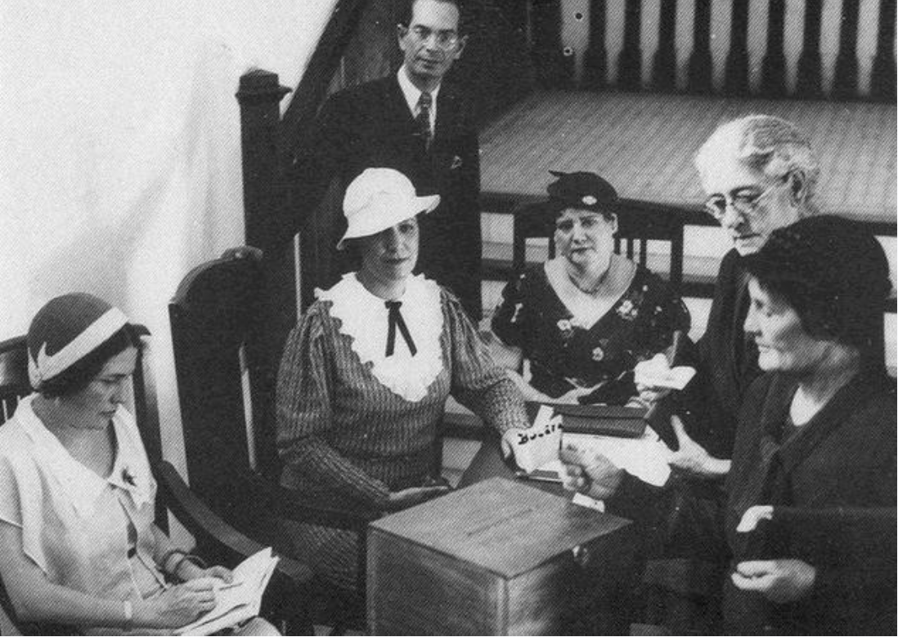
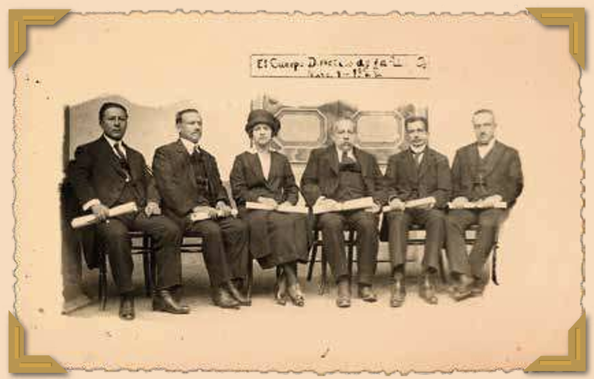

Ubicación geográfica:
Loja – Ecuador
Machala - Ecuador
Marco histórico:
En la década de 1920, Ecuador vivía una feroz "guerra cultural" entre el Estado Liberal y la iglesia católica (Orquera, 2022). En medio de esa tensión, donde las mujeres estaban relegadas al hogar y la caridad, Matilde Hidalgo decidió desafiar al sistema. No solo narramos la biografía de la primera mujer en votar en América Latina. Aquí exploramos la gran paradoja política detrás de su conquista: un momento histórico donde sectores conservadores apoyaron el voto femenino creyendo que la iglesia ganaría poder, mientras que ciertos liberales se oponían por miedo al "fanatismo religioso" de la mujer (Orquera, 2022).
Desarrollo del Tema
La Estrategia Legal de Matilde (1924)
El 9 de junio de 1924, Matilde intentó inscribirse en el padrón electoral de Machala y fue rechazada. No se conformó y elevó la consulta al Consejo de Estado. A pesar del descontento de la iglesia y del Partido Conservador, Matilde acorraló legalmente al Consejo de Estado argumentando:
- Semántica: La palabra "hombre" en la ley se refería al "género humano" en general (hombres y mujeres).
- Ciudadanía: Si las mujeres están sujetas a las leyes y deberes con la patria, también deben tener derechos políticos.
- Capacidad: No había impedimento legal ni intelectual para prohibirles votar.
El Resultado: Hito Constitucional (1929)
Contrario a lo que se cree, el voto femenino no fue apoyado unánimemente por los liberales, partido de Matilde. En realidad, ocurrió en medio de una intensa disputa entre el Estado Liberal y la Iglesia Católica:
- Gracias a este hecho precedente, la Asamblea Constituyente de 1928-1929 elevó el voto femenino a rango constitucional.
- Se aprobó el voto para la mujer "alfabetizada", convirtiendo a Ecuador en el primer país de América Latina en garantizar este derecho.
- Contó con el apoyo jurídico del Dr. Francisco Ochoa Ortiz, enfrentando la oposición de la Iglesia y el Partido Conservador.
Actores involucrados:
- Matilde Hidalgo Navarro: Protagonista principal, primera médica y primera votante.
- Dr. Francisco Ochoa Ortiz: Miembro del Consejo de Estado que apoyó la interpretación legal de Matilde.
- La iglesia y el Partido Conservador: Protagonista principal, primera médica y primera votante.
- Movimientos feministas nacientes: Mujeres que empezaban a organizarse en torno a revistas como Nuevos Horizontes.
Fragmentos de Testimonios
Argumento ante la Junta Electoral:
Un Legado Multidimensional
Matilde Hidalgo no solo votó; transformó la sociedad ecuatoriana en cuatro pilares fundamentales:
1. Político
Rompió el "techo de cristal" siendo la primera votante, y luego la primera concejala y diputada electa. (Llanos Vega, 2021).
2. Académico
Abrió el camino para que más mujeres accedieran a la educación superior como vía para la ciudadanía.
3. Social
Fundó la Cruz Roja en El Oro y organizó brigadas durante la invasión de 1941.
4. Ético
Su vida demostró que el patriotismo y la inteligencia son independientes del género.
5. Regional
Ecuador se convirtió en referente; países vecinos como Brasil y Uruguay aprobaron el voto femenino años después en 1932.
Recursos Multimedia
Pie de foto: Matilde Hidalgo votando.
El 21 de noviembre de 1921 Matilde Hidalgo Navarro obtiene el grado de doctora. La fotografía capta el momento de la incorporación el 1 de mayo de 1922. Fuente: “Colección Privada Matilde Hidalgo” de Jodie Padilla Lozano.

Documentos y Fuentes
Accede a los archivos originales utilizados en esta investigación:
Recomendaciones Culturales
- Película: Matilde 2003, dirigida por César Carmigniani. Es una película biográfica ecuatoriana que dramatiza su lucha.
- Museo: El Museo Matilde Hidalgo en la ciudad de Loja, donde se guardan sus títulos y objetos personales.
- Poesía: Leer los poemas de Matilde Hidalgo, ya que también fue una destacada poeta que escribió sobre la ciencia y la mujer.
- Libro: Matilde Hidalgo de Procel. Biografía y Poemario o el libro conmemorativo de los 100 años.